Smart Internet Radio
La radio di tutto il mondo, su un touchscreen da 4,3 pollici.
Migliaia di emittenti, suono stereo equalizzato, copertine dei brani e meteo, in un oggetto da scrivania progettato e costruito da GDN Creations.
- 2 × 30 W stereo
- Display touch 800×480
- Encoder rotativo
- EQ DSP 10 bande
- 30 preset
- 6 lingue
- Firmware aggiornato in automatico
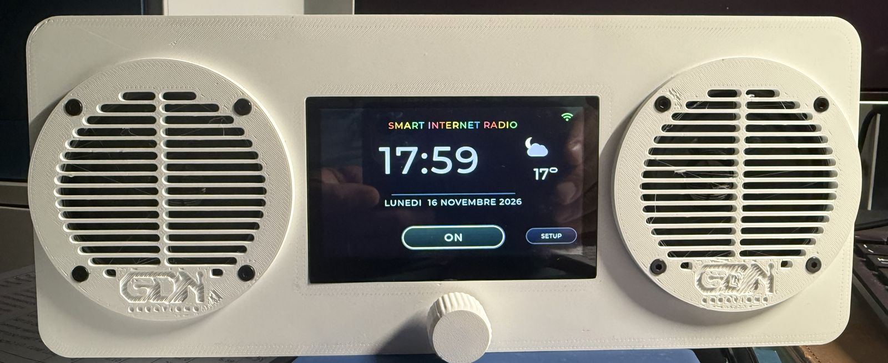
Una radio moderna con l'anima di un oggetto d'epoca
Smart Internet Radio unisce il piacere di una radio da tavolo, con due altoparlanti e una grande manopola, alla libertà dello streaming. Dal display touch a colori si cercano le stazioni di tutto il mondo per nome, Paese o genere, si salvano le preferite su 30 tasti preset e si regola il suono con un vero equalizzatore digitale a 10 bande per canale.
Durante l'ascolto lo schermo mostra il titolo del brano, la copertina dell'album, il logo dell'emittente e un analizzatore di spettro stereo che si muove con la musica. In standby diventa un elegante orologio da scrivania con data e meteo. Tutto si controlla con il touch, con la manopola oppure dallo smartphone.
Smart Internet Radio in funzione
Cosa sa fare
Stazioni da tutto il mondo
Ricerca nel catalogo mondiale Radio Browser per nome completo o parziale, con filtri facoltativi per Paese e genere. Si può cercare anche un genere o un tag libero.
30 preset
Trenta memorie su tre pagine: un tocco su un tasto vuoto salva la stazione in ascolto, un tocco su un tasto pieno la riproduce. All'accensione la radio riparte dall'ultima stazione ascoltata.
Equalizzatore DSP a 10 bande
Un vero equalizzatore digitale da 31 Hz a 16 kHz, separato per il canale sinistro e destro, con preset Flat, Bass, Voce, Rock, Pop, Jazz, Classica e Loudness.
Spettro e VU meter
Analizzatore di spettro stereo a 24 bande calcolato sul segnale reale, con indicatore di picco, oppure VU meter. Tre stili di schermata: Classica, Hi-Fi e Minimale.
Copertine e loghi
Quando l'emittente trasmette artista e titolo, la radio cerca la copertina dell'album e la mostra a tutto schermo. Altrimenti mostra il logo della stazione.
Orologio e meteo in standby
In standby la musica si ferma e il display mostra ora, data, temperatura e condizioni meteo della tua città, scelta a mano o ricavata in automatico.
Controllo dal browser
Da smartphone, tablet o PC sulla stessa rete Wi-Fi: play e stop, volume, preset e ricerca delle stazioni. Puoi anche ascoltare la stessa stazione sul computer.
Aggiornamenti automatici
La radio si aggiorna in automatico via Internet: controlla da sola l'arrivo di nuovi firmware, li scarica e li verifica. Tu confermi con un tocco e ricevi subito nuove funzioni e miglioramenti, senza cavi né computer.
Pensata per la notte
Timer di spegnimento da 15 a 90 minuti, luminosità ridotta automatica nelle ore notturne e volume di accensione regolabile.
Potenza vera, suono Hi-Fi
Il cuore audio della radio è un amplificatore digitale in classe D da 2 × 30 W basato sul Texas Instruments TAS5756M. Il segnale arriva in forma digitale, tramite I2S, dal processore all'amplificatore, senza passaggi analogici intermedi che aggiungono rumore e ronzii. Il risultato è un suono pulito e dettagliato anche ad alto volume.
- Potenza musicale fino a 2 × 30 W con alimentazione a 24 V, abbondante per riempire un soggiorno; con 12 V la potenza resta adatta all'ascolto domestico.
- Stereo reale con due altoparlanti Visaton da 8 Ω a larga banda, uno per canale, ai lati del display.
- Catena digitale dallo stream all'amplificatore, con DAC integrato ad alta risoluzione.
- Equalizzatore DSP a 10 bande per canale con protezione automatica dalla saturazione: anche con i bassi in evidenza il suono non distorce.
- Formati ad alta qualità, compreso FLAC senza perdita, per le emittenti che lo trasmettono.
Scegli il tuo colore
Il case è progettato e stampato in 3D da GDN Creations, quindi la Smart Internet Radio si può avere in vari colori: dal bianco della versione in foto a tinte che si abbinano al tuo arredamento. Indica il colore preferito al momento della richiesta.
Facile dal primo minuto
Alla prima accensione una procedura guidata chiede la lingua (italiano, inglese, tedesco, francese, spagnolo o ucraino) e la rete Wi-Fi, con una tastiera completa sullo schermo. Poi la radio è pronta: agli avvii successivi riparte da sola con l'ultima stazione ascoltata.
Ogni funzione si usa sia con il touch sia con la manopola: ruota per spostarti, premi per confermare.
E non invecchia: gli aggiornamenti del firmware arrivano in automatico via Internet. La radio controlla periodicamente se GDN Creations ha pubblicato una nuova versione e la propone sullo schermo, pronta da installare con un tocco. Preset e impostazioni restano al loro posto.
Foto della Smart Internet Radio
Le schermate reali del dispositivo. Tocca una foto per vederla ingrandita.

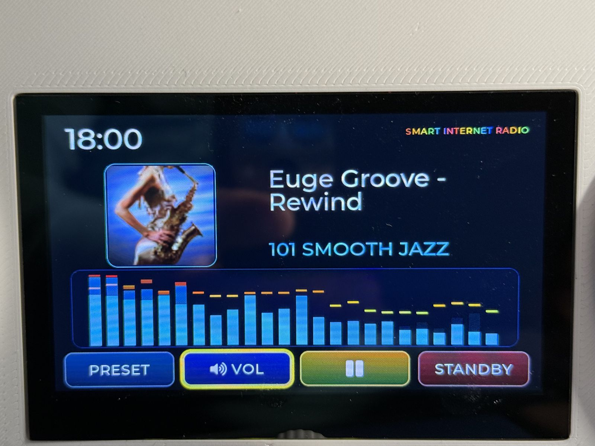

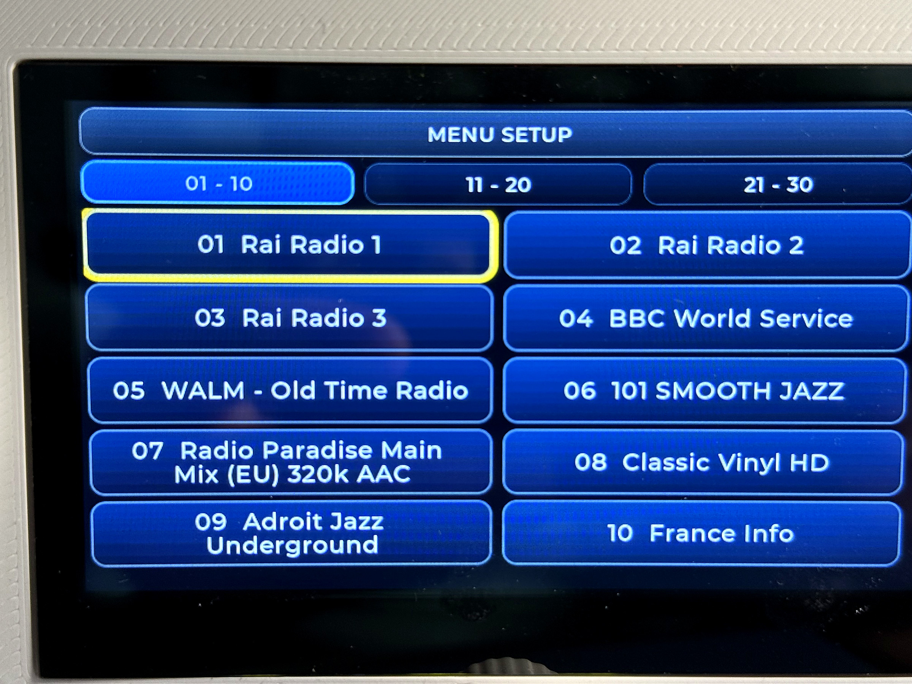

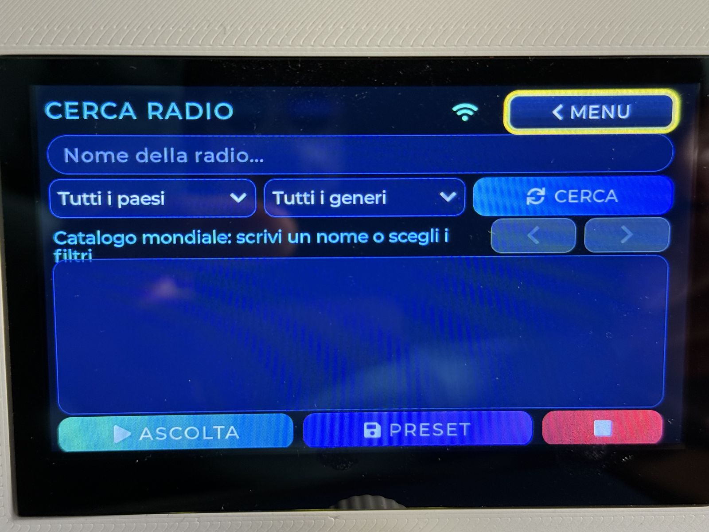

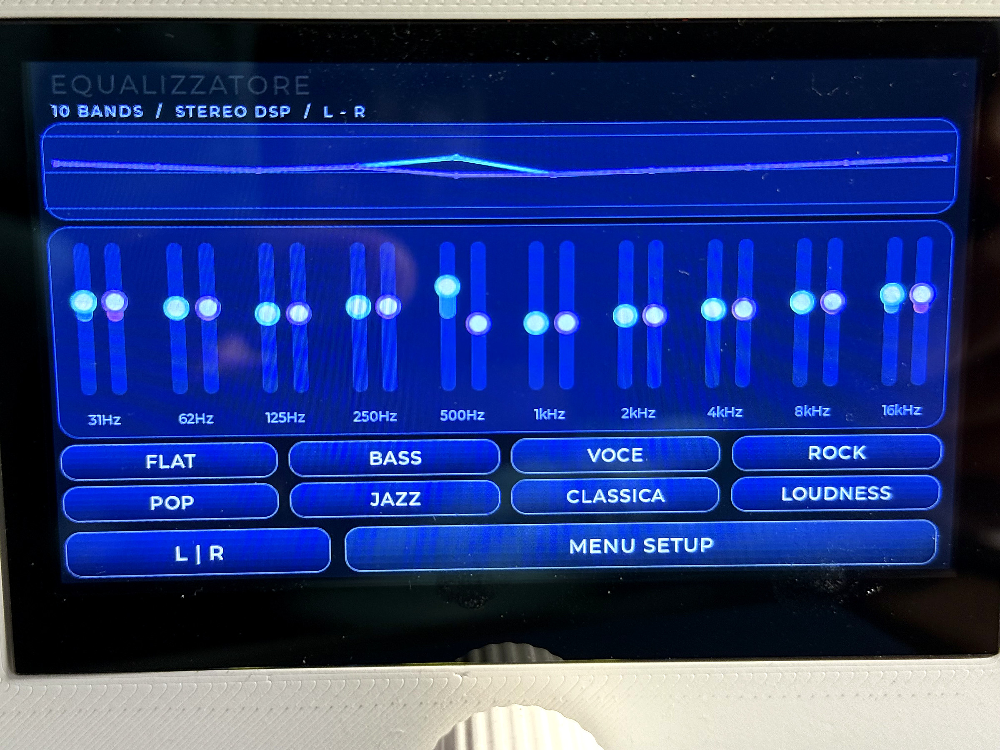

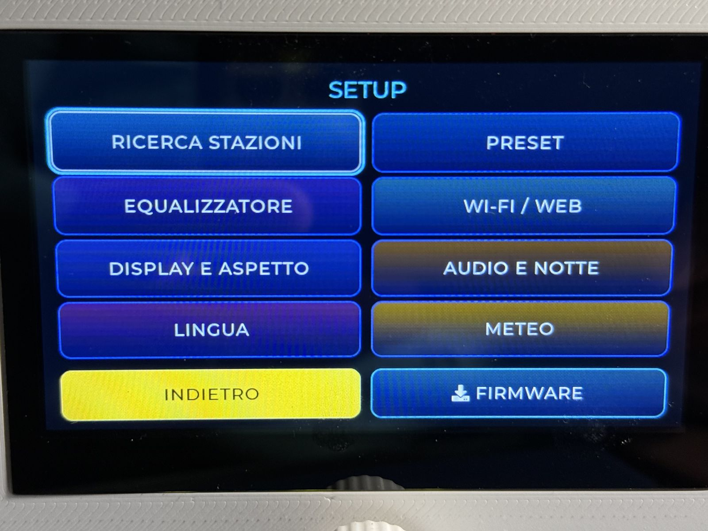

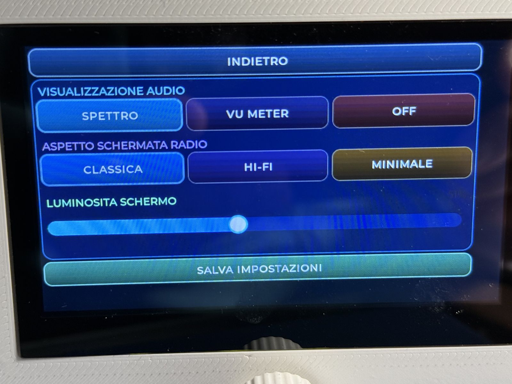

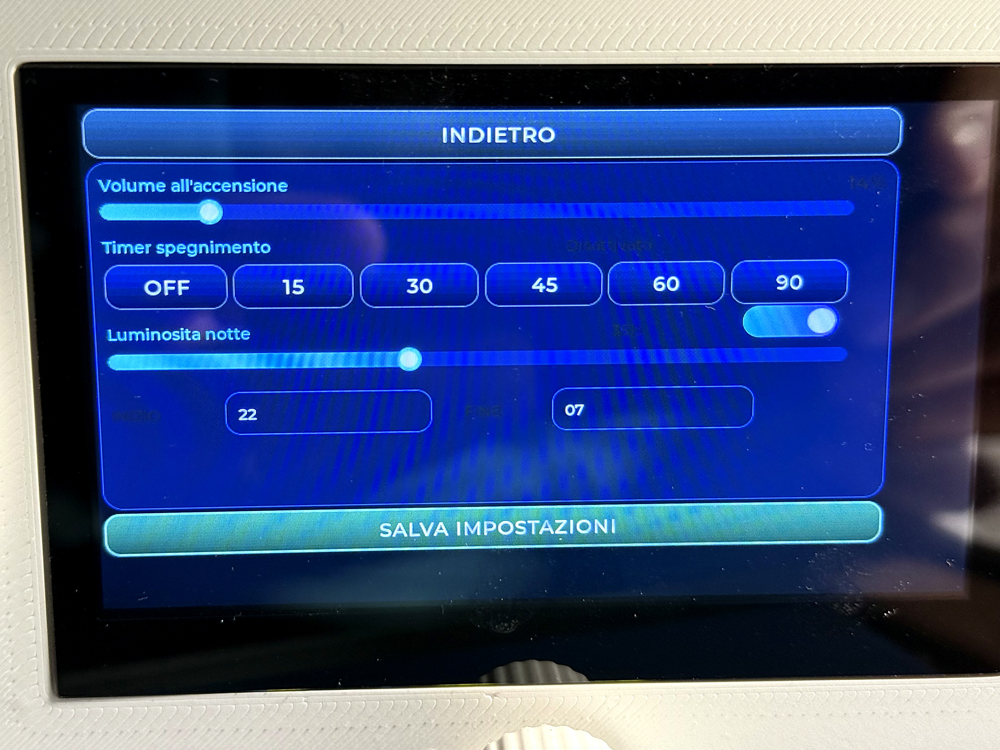

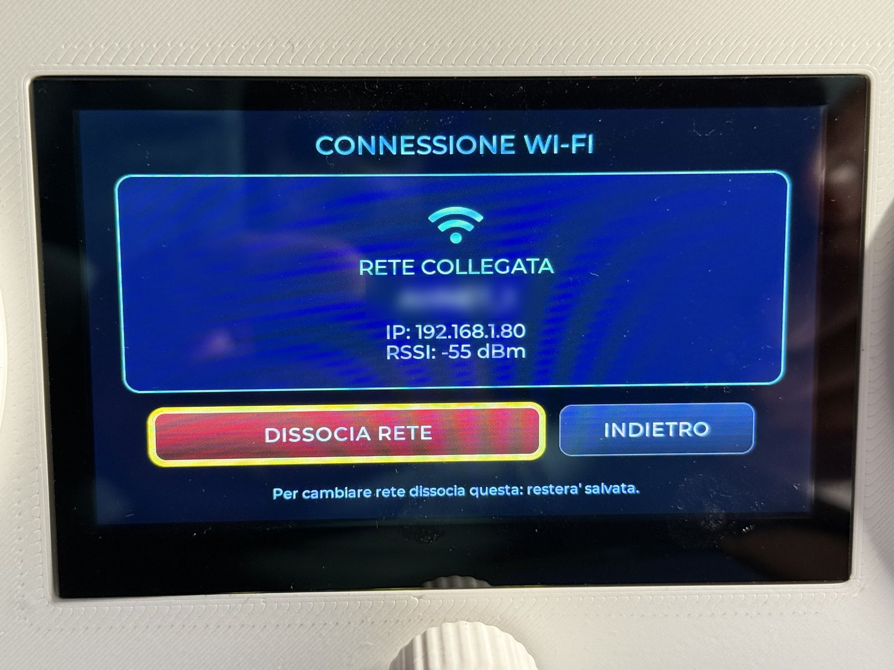

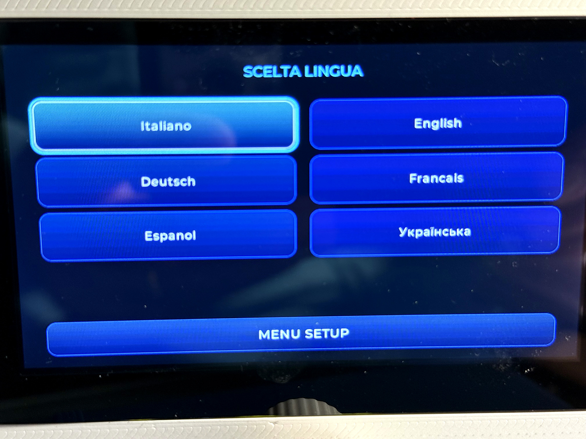

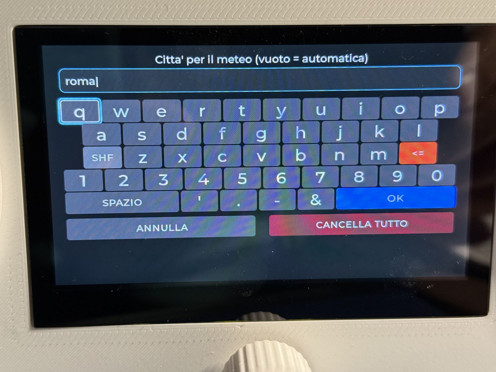

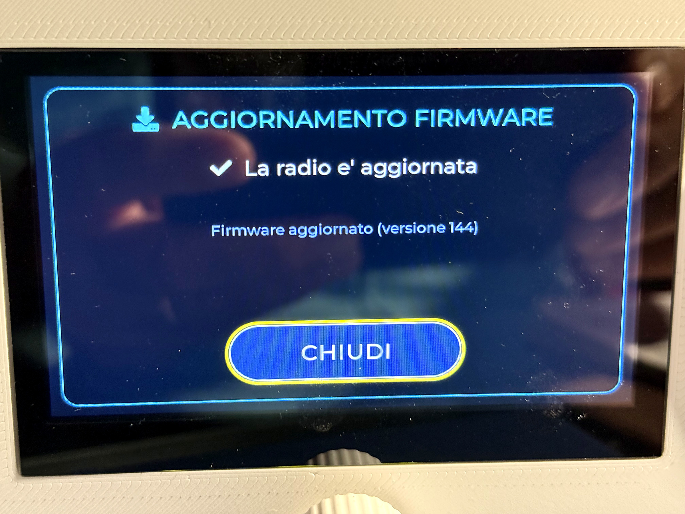

Manuale di istruzioni
Guida completa all'installazione, alla configurazione e all'uso quotidiano, disponibile in italiano e in inglese. Si può leggere online, stampare o scaricare in PDF.
Ti interessa?
Per informazioni, disponibilità o versioni personalizzate scrivi a GDN Creations.